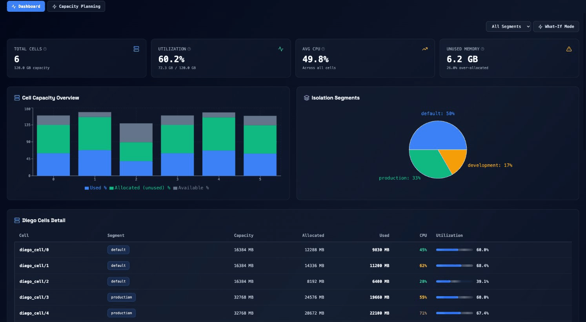
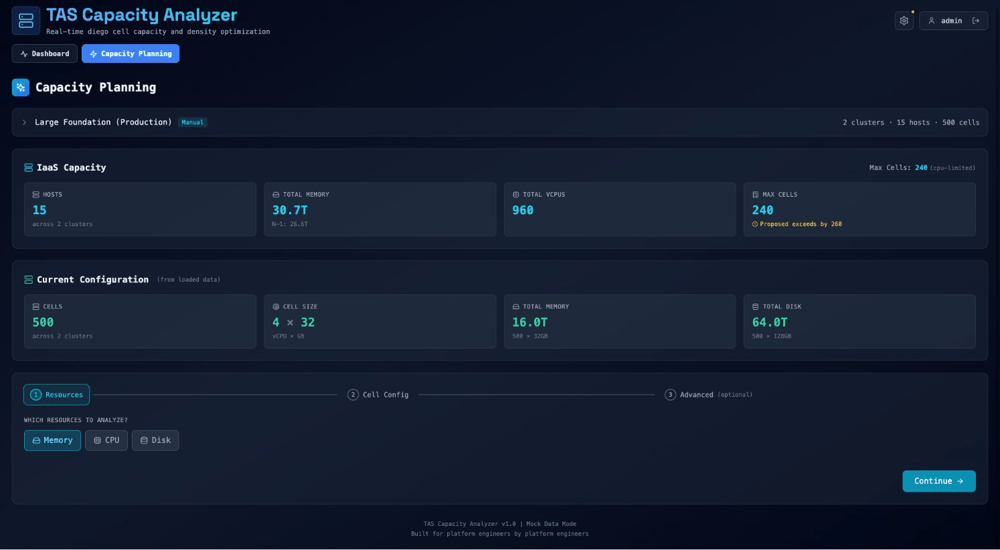
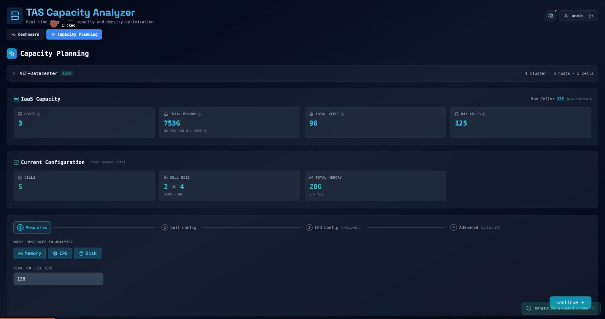

Diego Capacity Analyzer
🔍
Feature Walkthrough
Every button, every metric, every gauge — with screenshots!
📊 Dashboard Tab
Real-time visibility into your Diego cells
Dashboard at a Glance
Metric Cards (Top Row)
Cell Capacity Chart
Stacked bars per cell:
- ■ Blue = Used memory
- ■ Green = Allocated unused
- ■ Gray = Available
Large green bars = right-sizing opportunity!
Isolation Segments Pie
Cell distribution:
- ● default: 50%
- ● production: 33%
- ● development: 17%
Shows how cells are split across segments
Diego Cells Detail Table
| Column | What It Means |
|---|---|
| Cell | VM name (diego_cell/0) |
| Segment | Which isolation segment |
| Capacity / Allocated / Used | Memory breakdown |
| CPU % | Color-coded: green / yellow / red |
What-If Mode

What-If: Understanding Overcommit
Memory Overcommit Slider:
- 1.0x = No overcommit (default, safest)
- 1.5x = Promise 50% more than physical
- 2.0x+ = High risk — labs only!
| Ratio | Risk | Use Case |
|---|---|---|
| 1.0-1.3x | Low | Production |
| 1.5-2.0x | Medium | Dev/test |
| 2.0-3.0x | High | Labs only |
🔮 Capacity Planning
"Will my workloads fit?"
Capacity Planning Overview
IaaS Capacity Section
Current Configuration
From loaded data:
- Cells: 500 across 2 clusters
- Cell Size: 4 vCPU × 32 GB
- Total Memory: 16.0 TB (500 × 32 GB)
- Total Disk: 64.0 TB (500 × 128 GB)
⚠️ Notice: "Proposed exceeds by 260" — current config is over capacity!
Wizard Step 1: Resources
Which resources to analyze?
- ✓ Memory — Always on
- ✓ CPU — Toggle for vCPU:pCPU analysis
- ✓ Disk — Toggle for disk capacity
Disk per Cell: 128 GB default
Wizard Step 2: Cell Config
Configure your proposed cells:
| Input | Description |
|---|---|
| VM Size Preset | Small (4/32) → XXL (16/256) |
| Cell Count | How many Diego cells |
| Memory Overhead | % for Garden (default 7%) |
Wizard Step 3: Advanced Options
Power user settings:
- Memory Overhead slider — Adjust 1-20%
- Hypothetical App — "Can I fit this new app?"
- TPS Curve — Customize scheduler benchmark
Most people skip this. Use it to model specific scenarios.
📈 Results
The answers you came for
The Big Answer
✅ YES / ⚠️ MAYBE / ❌ NO
| Status | What It Means | Action |
|---|---|---|
| ✓ YES | All checks pass | Good to go! |
| ⚠ MAYBE | Warnings present | Review warnings |
| ✗ NO | Critical issues | Adjust config |
Why "NO"? Common Reasons
- Exceeds N-1/HA capacity — Can't survive host failure
- Memory utilization > 90% — Cells are full
- vCPU ratio too high — CPU oversubscribed (> 8:1)
- Low staging capacity — < 10 free chunks
Capacity Gauge: HA / N-1
Utilization = (Cell Memory + Platform VMs) / Usable Capacity
| Utilization | Status | Meaning |
|---|---|---|
| < 75% | Good | Safe headroom for failures |
| 75-85% | Warning | Approaching limits |
| > 85% | Critical | Can't survive host failure |
N-1 vs HA Admission Control
| Constraint | How It Works |
|---|---|
| N-1 | Reserve one host's worth of memory |
| HA Admission | vSphere setting: reserve X% of cluster |
Example: 15 hosts × 2 TB each = 30 TB
- HA 25% reserves 7.5 TB (≈ N-3 to N-4)
- N-1 reserves 2 TB (one host)
- HA wins — it's more restrictive
Memory & Disk Gauges
| Gauge | Good | Warning | Critical |
|---|---|---|---|
| Memory Utilization | < 80% | 80-90% | > 90% |
| Disk Utilization | < 80% | 80-90% | > 90% |
Memory Util = App Memory Used / Total App Capacity
This is app-level utilization, separate from HA capacity.
Free Chunks (Staging Capacity)
Free Chunks = (App Capacity - Used) / 4 GB
| Chunks | Status | Impact |
|---|---|---|
| ≥ 20 | Healthy | No deploy delays |
| 10-19 | Limited | May queue during busy periods |
| < 10 | Constrained | Deployment bottleneck |
Each cf push needs ~4 GB to stage a droplet
vCPU:pCPU Ratio
Ratio = (Cells × Cell vCPU) / Total Physical Cores
| Ratio | Risk Level | Guidance |
|---|---|---|
| ≤ 4:1 | Conservative | Production safe |
| 4-8:1 | Moderate | Monitor CPU Ready % |
| > 8:1 | Aggressive | Expect contention |
CPU Ready > 5% in vSphere = problems brewing
TPS (Scheduler Performance)
Tasks Per Second — how fast Diego schedules containers
| Cells | TPS | Notes |
|---|---|---|
| 3 | 1,964 | Peak performance |
| 100 | 1,389 | -30% from peak |
| 210+ | < 200 | Severe degradation |
Blast Radius
Blast Radius = 100 / Cell Count
| Cells | Blast Radius | Risk |
|---|---|---|
| 5 | 20% | One failure hurts! |
| 20 | 5% | Reasonable |
| 100 | 1% | Excellent |
Production should aim for < 5% blast radius
Bottleneck Card
Resources ranked by utilization:
- Memory (92%) ← Constraining!
- CPU (67%)
- Disk (45%)
Fix #1 first. Others don't matter until then.
Recommendations
Prioritized actions based on bottleneck:
| Type | Action |
|---|---|
| Scale-out | Add more cells |
| Scale-up | Bigger cells |
| Infrastructure | Add hosts |
| Optimization | Right-size apps |
Each shows impact + priority (1 = do first)
📋 Quick Reference
All thresholds at a glance
Threshold Cheatsheet
| Metric | Good | Warning | Critical |
|---|---|---|---|
| HA/N-1 Capacity | < 75% | 75-85% | > 85% |
| Memory Util | < 80% | 80-90% | > 90% |
| Disk Util | < 80% | 80-90% | > 90% |
| Free Chunks | ≥ 20 | 10-19 | < 10 |
| Blast Radius | ≤ 5% | 5-20% | > 20% |
| vCPU Ratio | ≤ 4:1 | 4-8:1 | > 8:1 |
Key Formulas
Max Cells = Usable Memory / Cell Memory
N-1 Usable = Total - One Host
HA Usable = Total × (1 - HA%)
vCPU Ratio = (Cells × vCPU) / pCPUs
Blast Radius = 100 / Cell Count
That's Everything! 🎉
Questions?
📄 Full docs: docs/UI-GUIDE.md
🧮 Formulas: docs/plans/2025-01-22-formula-cheatsheet.md
❓ FAQ: docs/FAQ.md